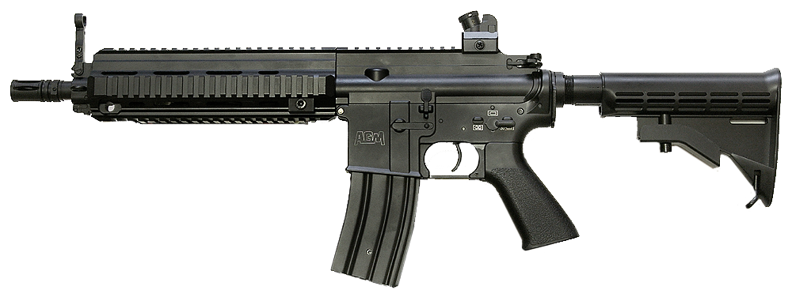
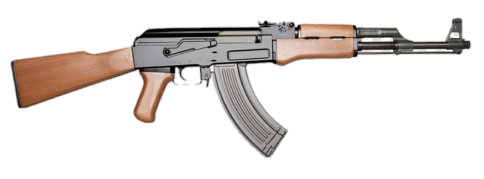
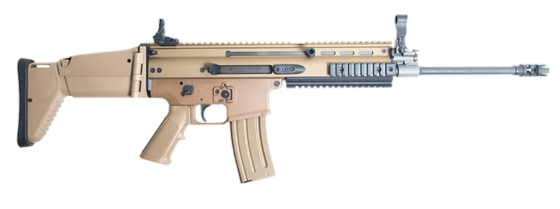

M416
M416 (М416) — самая популярная штурмовая винтовка (автомат) в PUBG, с патронами калибра 5.56 мм. Лучше М4 только АУГ, но он поставляется только в аирдропах, поэтому люди предпочитают собирать М416 в полном обвесе. С такой эмкой легко вести точный автоматический огонь с низкой отдачей, даже с прицелом х4.
Максимальный урон наносится до 60 метров и дальше убывает до 445 метров. Винтовка сбалансирована: мощная, пригодная для точной дальной стрельбы и контролируемого спрея в ближнем бою. Невооруженным глазом вы не заметите, что отдача выше чем у Скара. Некоторому количеству игроков это не нравится, остальные закрывают глаза, считая что Скар хуже (потому что скорострельность меньше). Хотя объективно Скар стабильнее.
Винтовки в руки на тренировочной карте — определите, какой из них и с какими навесами вам удобнее пользоваться и вперед, завоевывать ТОП-1.
AKM
AKM - Автомат Калашникова модернизированный (АКМ) – модернизация легендарного АК. Еще больше надежности! Наносит сокрушительный урон, однако уступает прочим штурмовым винтовкам в скорострельности и имеет сильную отдачу. Для комфортного использования желательно установить модули.
Автомат Калашникова является одним из самых сильных оружий в игре из-за высокой точности и мощности, а также возможности переключения между одиночным и полностью автоматическим режимами. В основном находится в больших городах.
SKAR L
Scar-L (Скар) — стабильная штурмовая винтовка в PUBG, на втором месте по популярности после M416. Скаром легко управлять, не сложнее чем UMP. Наденьте вертикальную ручку, компенсатор и можете спреить даже с прицелом х4. Недостаток Скара вначале игры — мелкий прицел (мушка), стрелять откровенно неудобно.
Максимальный урон Скаром наносится до 70 метров, затем постепенно уменьшается до 495 метров. Скар в управлении идентичен винтовке М416 (у последней выше отдача и скорострельность), подходит для ведения огня на расстояниях 25-450 метров.
История: Scar-L это легкий вариант боевой штурмовки спецназа FN SCAR, находящийся на вооружении в США и еще 20 странах.